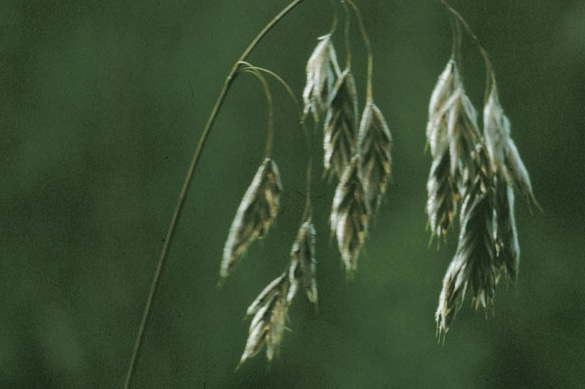
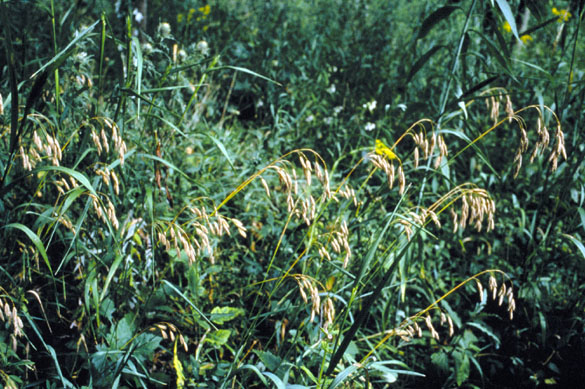
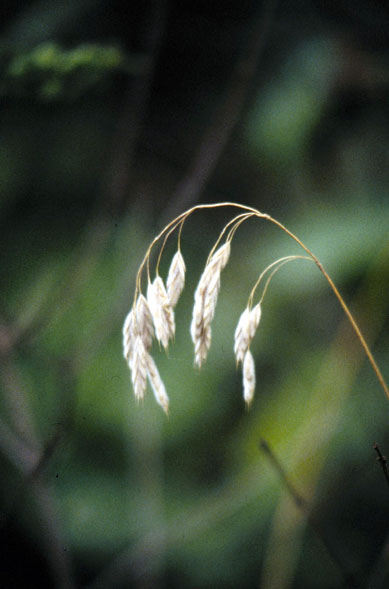
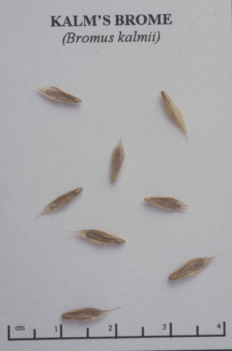
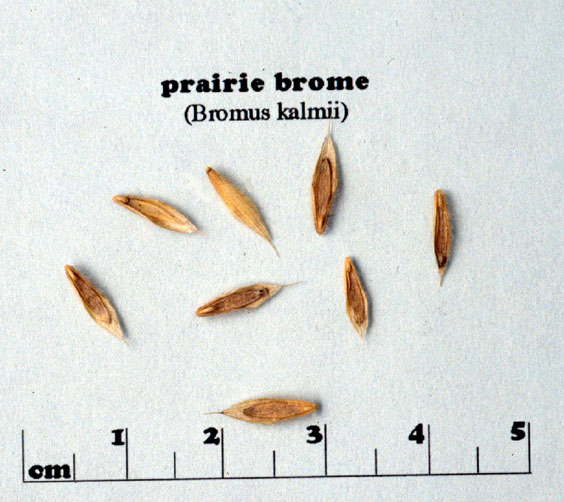

Bromus kalmii
Family: Poaceae
Prairie Brome
Swink/Wilhelm #10




FLOWERING: June - July
SEED TIMING: Early August to mid -October
HABITAT: Undisturbed dry to wet mesic prairie and open savanna. Grows well in edges. Also in calcareous fens
DIAGNOSTIC FEATURES: 18 to 30 inches high. Not rhizomatous. Grows scattered in occurrence. Nodding, softly pubescent spiklets with typical brome appearance of flattened interlocking lemmas. Branches of panicles are rather stiffly ascending and panicle is somewhat compact.
TO PICK: Spikelets are light brown when ripe and pull easily off the panicle. This is a short-lived grass so we harvest a lower percentage of the seed to ensure a returning population. The spikelet turns brown and ripens over a long period of time. It is always a temptation to pick this too early.